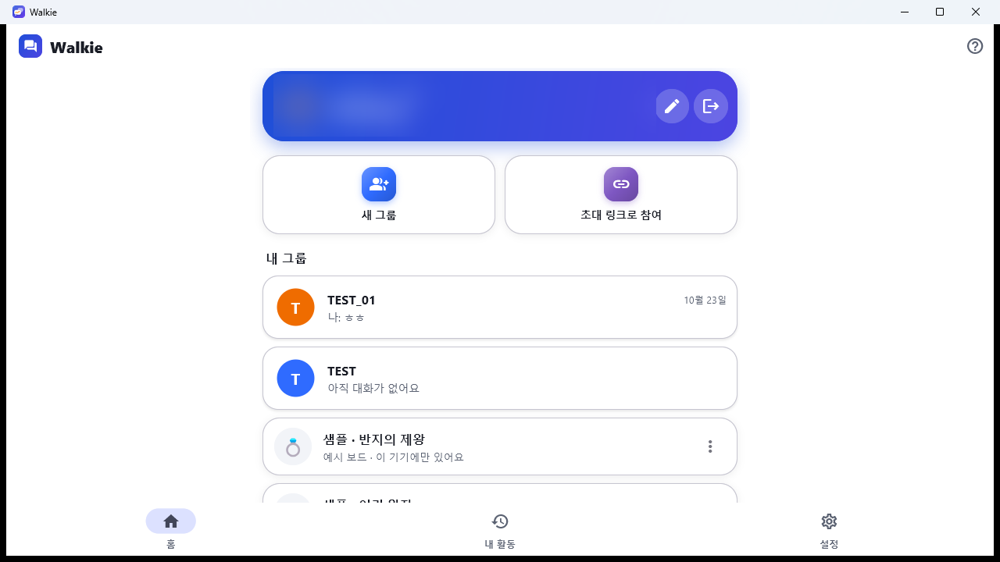

소설·웹툰 작가, 세계관을 함께 만드는 팀
인물 관계도와 스토리 라인을 한 판에
- 인물 카드·관계선·종족별 영역으로 관계도를 그리고, 아래에는 시간순 사건 흐름
- 공동 작가·편집자와 통화하며 같은 판을 고쳐요 — 누가 무엇을 만들었는지 이름표로 보여요
- 원고 내용은 서버에 저장되지 않아요(멤버 기기끼리 암호화)


추리 소설·TRPG 모임, 사건을 정리하는 사람
수사 기록 벽처럼: 인물·증거·관계를 실로 잇기
- 사진·증거 카드·빨간 실(범행)·파란 실(수사)로 조직도를 짜요
- 함께 추리하며 실시간으로 옮기고, 보드 여러 장으로 사건별 정리
스터디 그룹, 과외·온라인 수업
통화하면서 같은 판에 판서
- 펜·도형·화살표·표·목록으로 문제 풀이를 함께 적어요
- "따라가기"로 설명하는 사람이 보는 곳을 같이 봐요
- 끝나면 PNG로 저장하거나 보드째 백업(.walkie)해서 나눠요


연구실·독서 모임·깊게 공부하는 사람
개념과 사람, 사건을 잇는 연구 지도
- 도판(사진)·식·인물 메달·시간축을 한 판에
- 찾기(Ctrl+F)로 모든 보드의 글자를 바로 찾아 이동
가족·친구·동호회
여행·행사 계획을 말하면서 정리
- 지도 사진 위에 동선을 긋고, 포스트잇으로 할 일을 나눠요
- 그룹이 많아도 카테고리로 접어 깔끔하게
- 초대 링크 하나로 시작 — 받은 사람은 링크를 열면 설치·참여 방법이 나와요

샘플 파일(.walkie)은 Walkie를 설치한 뒤 두 번 누르면(폰은 파일 앱에서 열면) 새 보드로 불러와져요. 샘플 속 그림은 직접 그린 것이고, 이야기는 직접 요약했어요.